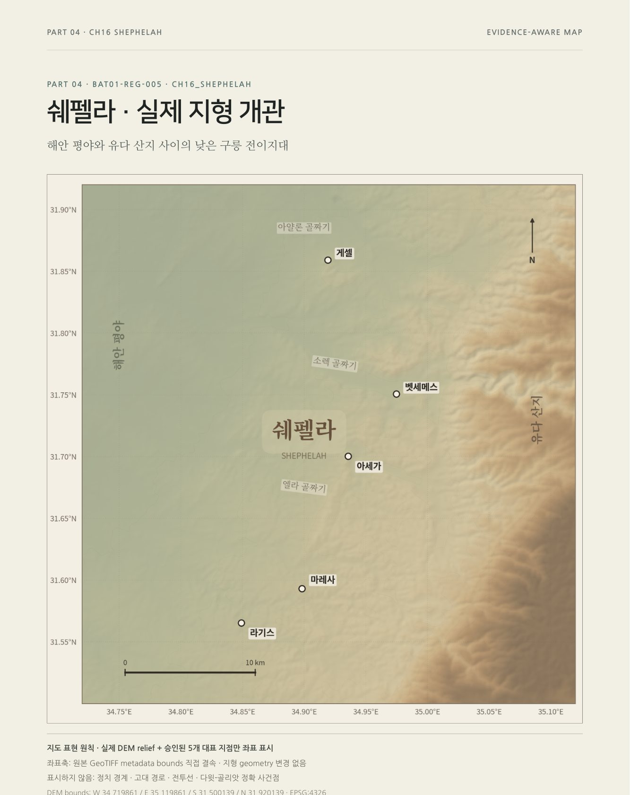
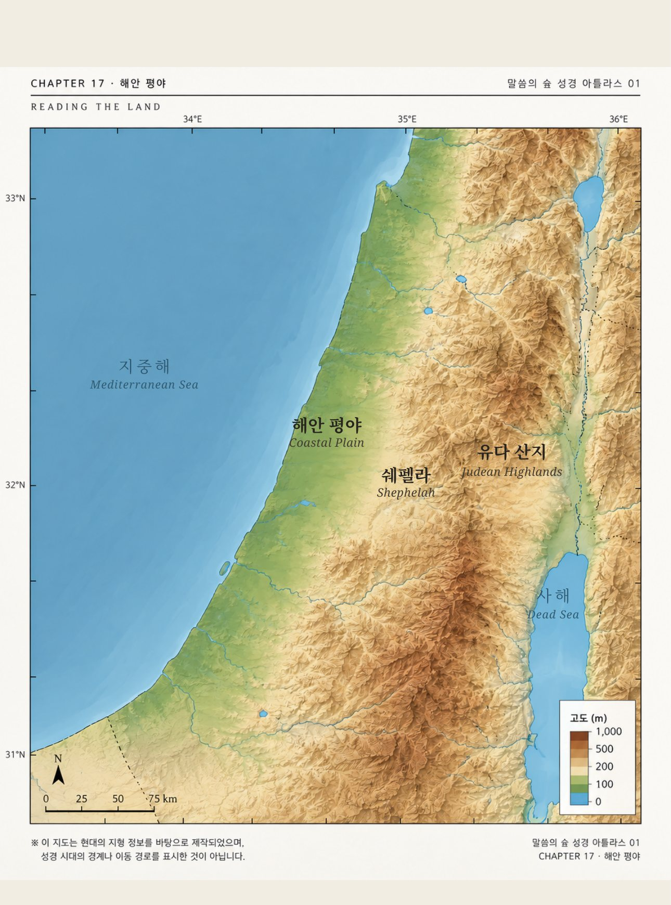
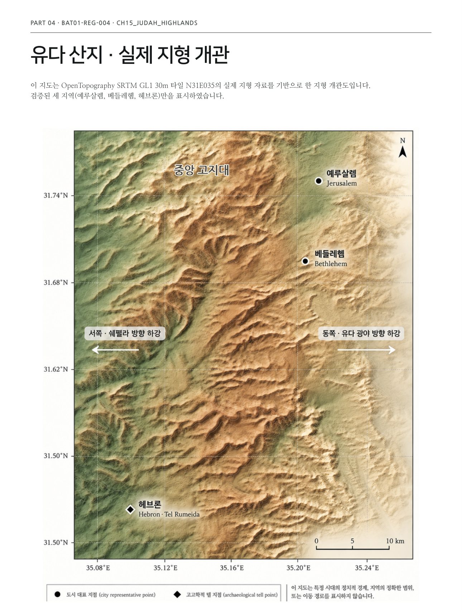
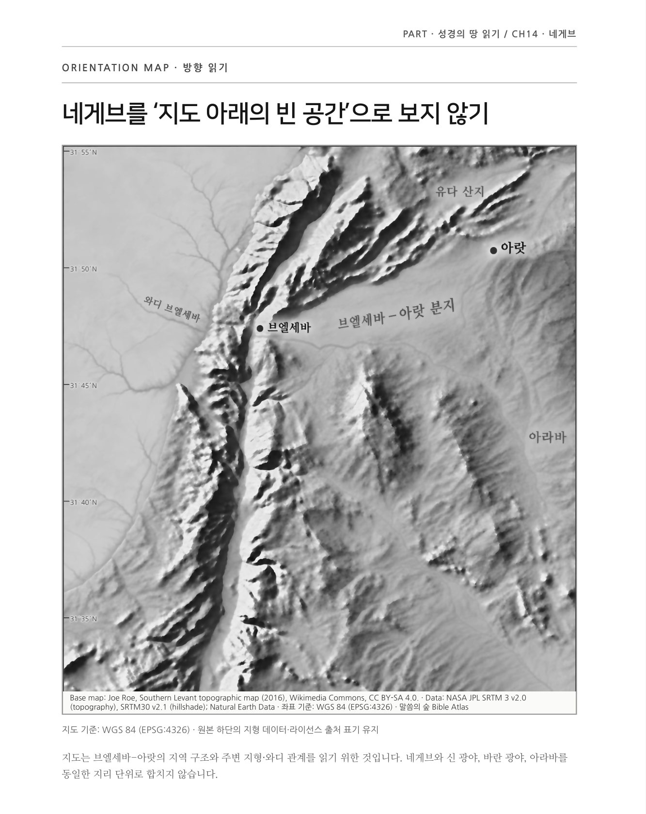
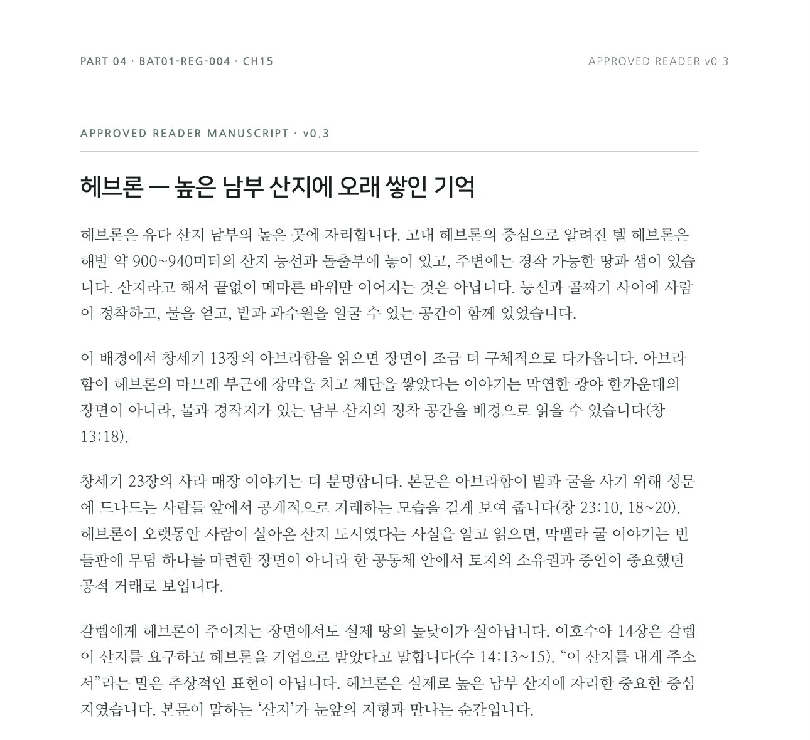
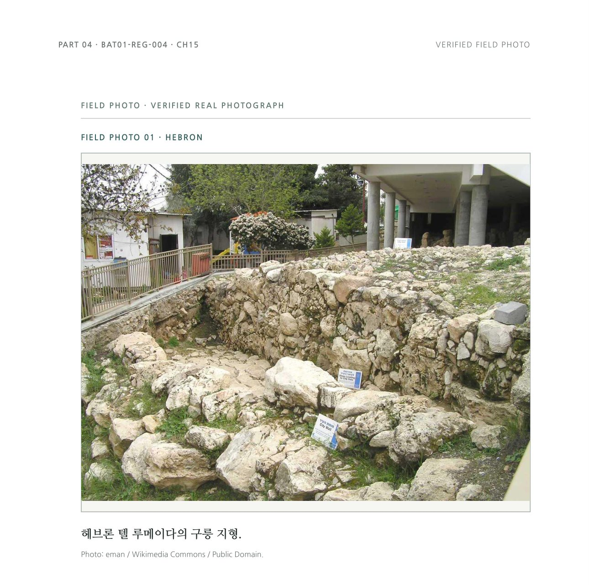

쉐펠라
산지와 해안 평야 사이, 낮은 구릉 지대의 지형도와 원고를 만들었습니다.
Series 02 · 땅으로 읽는 성경
말씀의 숲 성경 아틀라스는 성경의 땅을 지도 위의 정보로 스쳐 지나가지 않습니다. 실제 지형 자료를 따라 산지와 골짜기, 평야를 읽고, 그 땅 위에서 본문을 다시 봅니다.

이 책은 어떤 책인가
땅으로 읽는 성경은 이런 순서를 따릅니다. 먼저 실제 지형 자료(위성 고도 데이터, 고고학, 고대 문헌)를 검토하고, 확실히 확인된 것만 지도에 표시합니다. 그리고 그 실제 땅 위에서 성경 본문을 다시 읽습니다.
그래서 이 책은 “어디에 무엇이 있었는가”로 끝나지 않고, “이 땅의 높낮이와 거리, 방향이 본문을 어떻게 다르게 보이게 하는가”를 묻습니다.
“이 땅을 알고 본문을 읽으면, 이야기는 추상적인 배경에서 내려와 실제 높이와 골짜기와 밭과 물이 있는 땅 위에 다시 놓입니다.”— 「유다 산지」 원고 중에서
땅으로 읽으면 달라지는 것
도시 이름부터 찾지 않고, 남북으로 이어지는 땅의 큰 뼈대를 먼저 봅니다.
서쪽 쉐펠라의 낮은 구릉과 동쪽 유다 광야의 마른 땅, 그 사이의 높은 산지를 함께 봅니다.
헤브론·베들레헴·예루살렘을 빈 지도 위의 점이 아니라, 실제 땅 위의 자리로 놓습니다.
땅의 구조를 먼저 본 다음 본문을 읽으면, 같은 이야기가 훨씬 구체적으로 다가옵니다.
지역 샘플

지역 01
예루살렘·베들레헴·헤브론이 하나의 산악축 위에서 어떻게 이어지는지, 실제 지형 데이터로 만든 지형도와 현장 사진, 원고, 책 페이지까지 만들었습니다.

산지와 해안 평야 사이, 낮은 구릉 지대의 지형도와 원고를 만들었습니다.

물과 길이 만나는 성경의 남쪽 문. 이 방향 지도는 모노크롬 흑백판입니다.
지중해와 맞닿은 낮은 평야. 지형도가 담긴 책 페이지를 계속 다듬는 중입니다.
성경 본문과 함께 읽기
지형도로 끝나는 페이지가 아닙니다. 같은 챕터 안에서 지형을 본 다음, 그 땅 위에서 성경 본문을 다시 읽는 페이지로 이어집니다. 헤브론 편을 예로 보여 드립니다.

“헤브론이 오랫동안 사람이 살아온 산지 도시였다는 사실을 알고 읽으면, 막벨라 굴 이야기는 빈 들판에 무덤 하나를 마련한 장면이 아니라 공동체 안에서 토지의 소유권과 증인이 중요했던 공적 거래로 보입니다.”
실제 책 페이지

이 페이지들은 내부 제작 과정에서 나온 자료입니다. 최종 인쇄·출간본과 다를 수 있습니다.
땅으로 읽는 성경은 지금 만들어지고 있는 시리즈입니다. 이 페이지는 그 과정에서 미리 보여 드리는 프리뷰이며, 아직 최종 출간본은 아닙니다.
땅을 알면,
본문이 다시 보입니다.